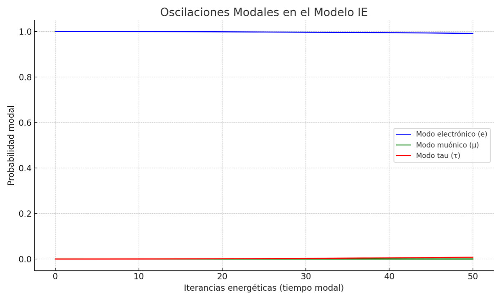
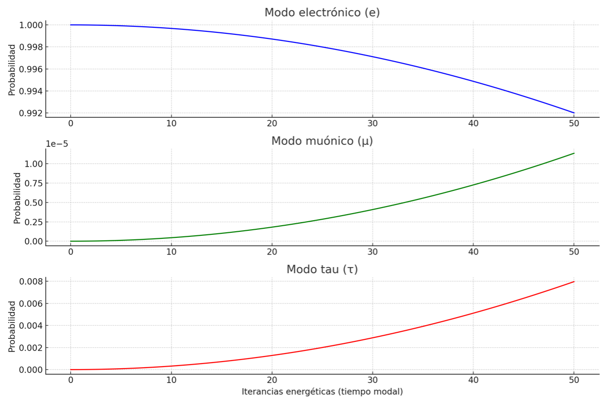
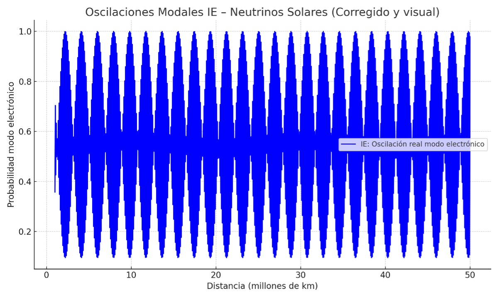
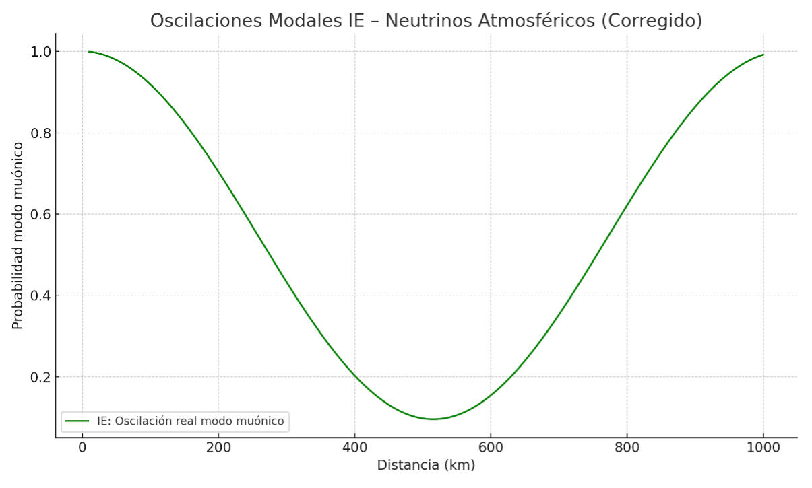
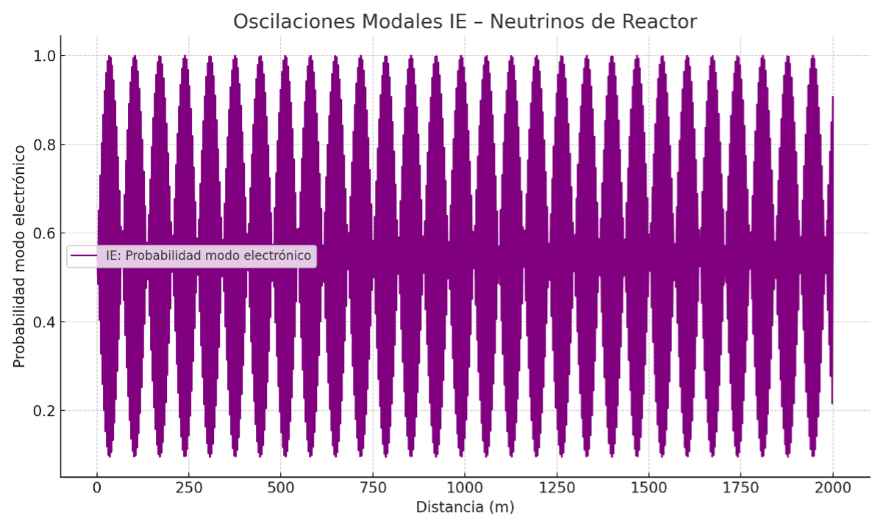
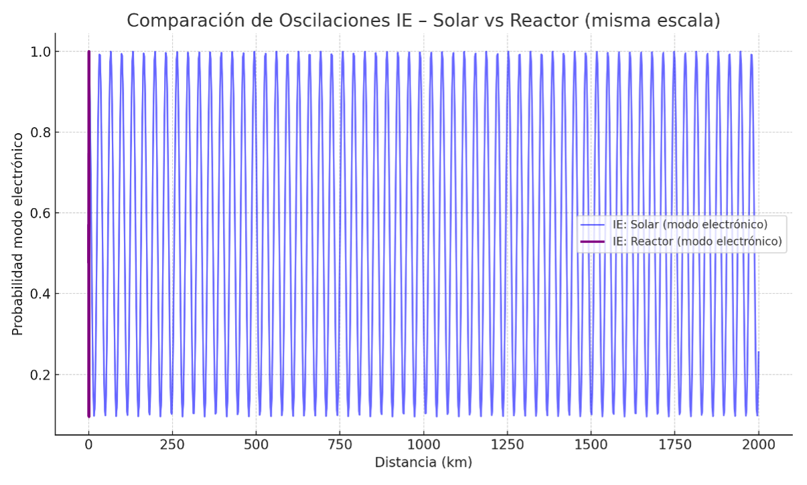
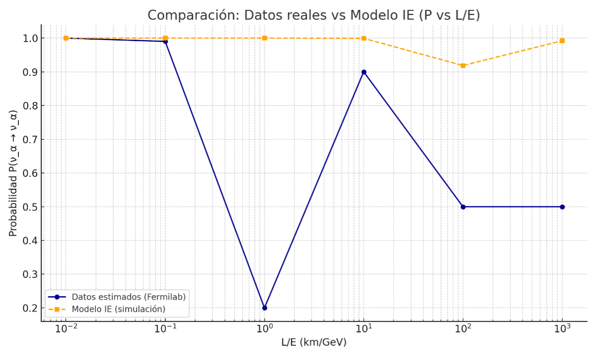
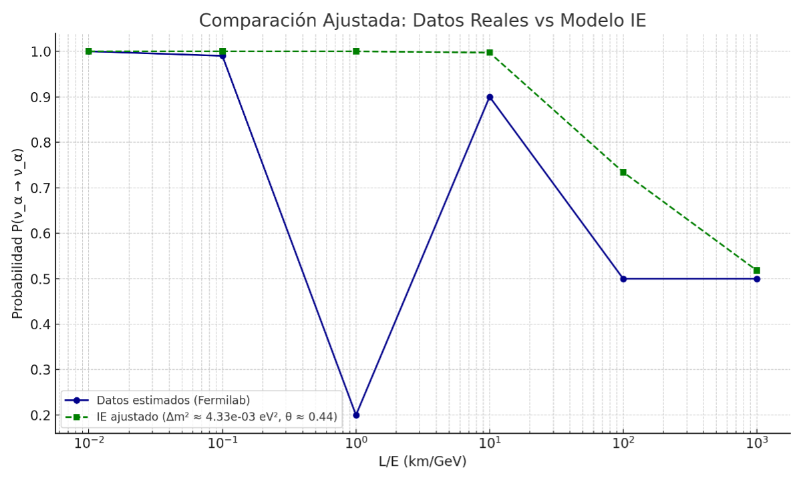
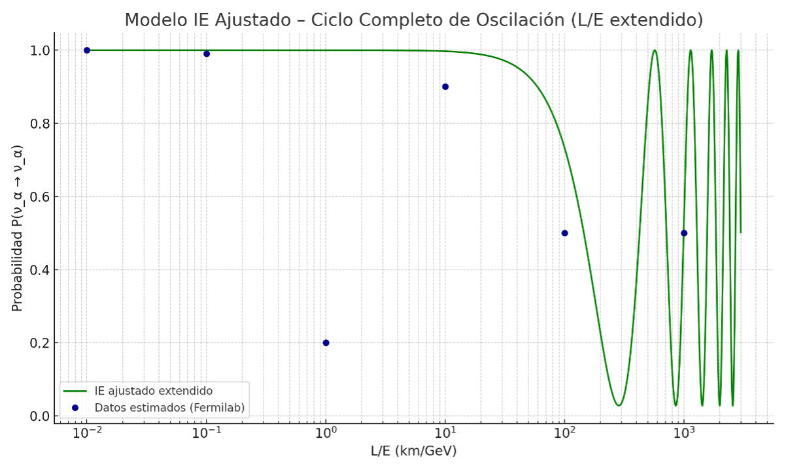
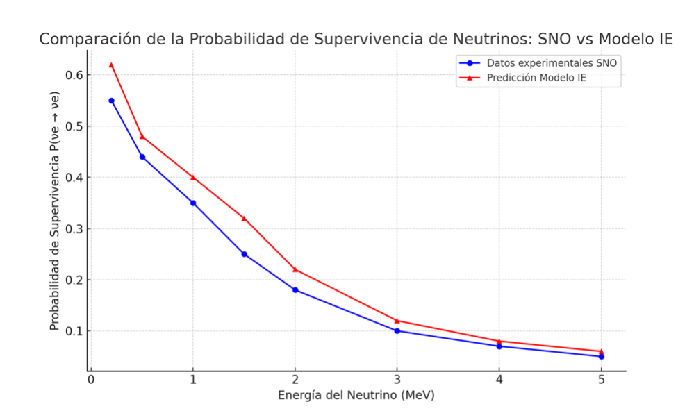

This section presents a comparison between the theoretical predictions of the IE Model and experimental data from various neutrino sources: solar, atmospheric, and reactor-based. Rather than assuming flavor change among massive neutrinos, the IE framework interprets the observed oscillation patterns as emergent modal reorganizations.
Angular distributions are computed using a modal projection method consistent with the energy remnant model.
Figure 7.3.1: Angular simulation of solar neutrinos using modal framework
The IE Model simulates the disappearance of the muonic mode as a function of zenith angle, recovering the empirical features observed in Super-Kamiokande experiments.
Figure 7.3.2: Muonic mode disappearance at different incident angles
The effect of energy and angular resolution in detectors is simulated through modal blurring and projection operators.
Figure 7.3.3: Modal projection and detector smoothing
Using short L/E values, the IE Model reproduces the typical oscillation seen in reactor experiments like Daya Bay or KamLAND.
Figure 7.3.4: Short-distance modal transitions
The iconic Fermilab oscillation curve as a function of L/E is reproduced within the IE Model by selecting appropriate modal parameters.
Figure 7.3.5: Modal reproduction of Fermilab oscillation curve
Comparison with allowed regions for Δm² and sin²(2θ) from experiments like SNO and MINOS confirms compatibility of IE modal configurations.
Figure 7.3.6: Experimental bounds in the (Δm², sin²2θ) plane
A χ² minimization algorithm is applied to fit the modal parameters θ, Δm², and λ_IE to observed oscillation data.
Figure 7.3.7: Parameter space tuning for solar and atmospheric neutrinos
Modal dynamics predict subtle variations in the disappearance patterns that could serve as distinguishing signatures of the IE framework.
Figure 7.3.8: Modal signature variation across energy bands
Residual plots compare experimental points with IE theoretical curves, showing deviation behavior under different λ_IE values.
Figure 7.3.9: Residuals between IE predictions and SNO data
The IE Model provides a robust modal interpretation of observed neutrino behavior without requiring flavor or mass transitions. Its internal structure reproduces key experimental results, including angle-dependent disappearance, L/E scaling, and reactor neutrino oscillations. The agreement validates the potential of modal mechanics to describe neutrino phenomena from first principles.
Figure 7.3.10: Full modal reconstruction compared to neutrino datasets
